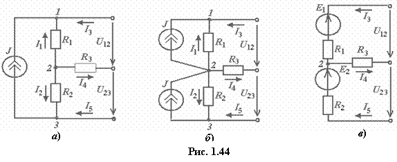

Идеальный источник тока (ИТ) J, включенный между узлами 1 и 3 (рис. 1.44а), может быть заменён двумя источниками тока, подключёнными параллельно ветвям цепи с резисторами R1 и R2 (рис. 1.44б) и образующими путь между узлами 1 и 3. Ветвь, ранее содержащая идеальный источник тока J, после переноса, исчезает.

;Источник тока J переносится без изменения значения заданного тока J и его ориентации относительно узлов 1 и 3. Это подтверждается тем, что суммарные токи в узлах 1, 2 и 3 схем а и б (рис. 1.44) одинаковы:
для узла 1: для узла 2: для узла 3:
В общем случае идеальный источник с
заданным током, включённый между узлами j и k, может быть заменён
n источниками с одинаковыми заданными токами = J, где n − число ветвей между узлами j и k, причём отдельные ветви могут содержать источники напряжения.
Источники тока
с параметрами J, R1 и J, R2 могут быть заменены эквивалентными источниками напряжения с ЭДС и (рис. 1.44в).